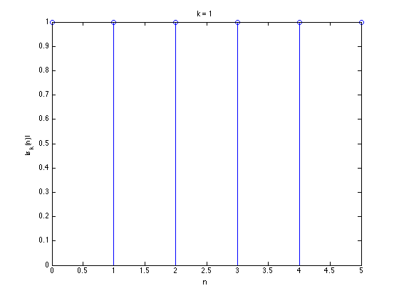
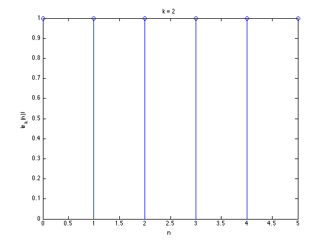

ki = 1:6;
n = 0:5;
for k = 1:6
s = exp(j*(2/6)*pi*k.*n);
figure
stem(n, abs(s))
title(['k = ', num2str(k)])
ylabel('|s_k(n)|')
xlabel('n')
disp([' For k = ', num2str(k)])
disp(s)
end
For k = 1
Columns 1 through 5
1.0000 0.5000 + 0.8660i -0.5000 + 0.8660i -1.0000 + 0.0000i -0.5000 - 0.8660i
Column 6
0.5000 - 0.8660i
For k = 2
Columns 1 through 5
1.0000 -0.5000 + 0.8660i -0.5000 - 0.8660i 1.0000 - 0.0000i -0.5000 + 0.8660i
Column 6
-0.5000 - 0.8660i
For k = 3
Columns 1 through 5
1.0000 -1.0000 + 0.0000i 1.0000 - 0.0000i -1.0000 + 0.0000i 1.0000 - 0.0000i
Column 6
-1.0000 + 0.0000i
For k = 4
Columns 1 through 5
1.0000 -0.5000 - 0.8660i -0.5000 + 0.8660i 1.0000 - 0.0000i -0.5000 - 0.8660i
Column 6
-0.5000 + 0.8660i
For k = 5
Columns 1 through 5
1.0000 0.5000 - 0.8660i -0.5000 - 0.8660i -1.0000 + 0.0000i -0.5000 + 0.8660i
Column 6
0.5000 + 0.8660i
For k = 6
Columns 1 through 5
1.0000 1.0000 - 0.0000i 1.0000 - 0.0000i 1.0000 - 0.0000i 1.0000 - 0.0000i
Column 6
1.0000 - 0.0000i
 